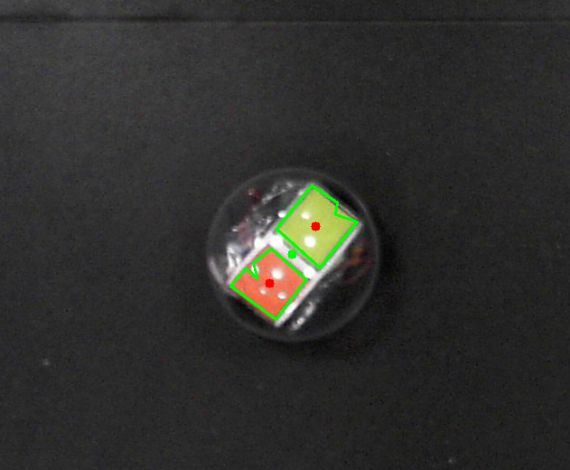

Mechatronics Two
The Project Goal:
This project is referred to as Mechatronics Two here due to it being the second Mechatronics project I completed during my 2 years one the Integrated Design Engineering course.
Similarly to the first project there were roles that needed to be assigned to each member for the duration of the project. These were Mechanical, Electrical, Mission Control and Critical Event. As I had chosen the software role in the first project and the Mission Control role was most similar this, I opted to undertake that role a second time. The goal for the project this time was to create a hamster ball style robot and a course it was designed to follow all while being controlled wirelessly and automatically from a control unit and camera mounted overhead. The system architecture for the role is defined by the diagram below.
The Method:
As suggested in the introduction documentation for the project, I started writing a program that could detect the position and orientation of Aruco markers (Simple versions of QR codes). These were to be used, not only to find the position and orientation of the robot but also the locations of critical points along the route the robot needed to reach.
It was discovered during the development of the program to detect them that when encased within the hamster ball robot it could be difficult to detect them due to glare from the lights in the room. Fortunately however there was a solution. While writing the Aruco detection program I had also been writing one to detect blocks of colour within the frame of the camera which was meant to be used for the Critical Event. Therefore I placed blocks of colour within the hamster ball robot and these were much more reliable as even if the glare shone over part of the colour block the rest of it would still be detected. Then by enhancing the program to find the position and orientation of the robot using these blocks it became possible to detect the robot in a variety of light conditions not possible before.
With the robots position and orientation found and the location of crucial points on the route known, a program needed to be written to communicate with the robot wirelessly. As an Ardunio was already being used to control the motors of the robot it was decided that an MQTT infrastructure could be used to communicate. Two programs were created, one for the robot receiving commands and another for the camera and computer to translate the robots position and orientation as well as the position of crucial locations into a route for it to follow.
Now that the robot could automatically traverse the route set out in-front of it the Critical Event needed to be addressed. As previously mentioned the colour detection algorithm was used to "see" when the event was active. This was done by detecting red LEDs lighting up. While initially we encountered problems with this as the exposure of the camera was too high to detect the colour in the light, after placing a diffuser over the top, It was possible for the camera to detect it's activation. This concluded the project and after a test is was found that everything worked.
I believe that the integration of our separate roles could have been better and this project taught me to not necessarily heavily depend on others completing their work to the standards you set for yourself.